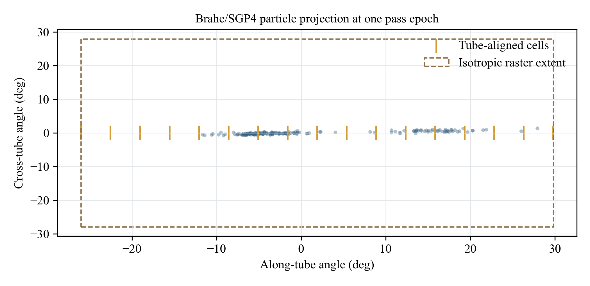

LEOPT
Bayesian Search MPC for Spacecraft Acquisition
Under Orbital Uncertainty
Stanford University
Stanford Intelligent Systems Laboratory
LEOPT acquisition console Watch on YouTube
Abstract
During launch and early orbit operations, ground stations must acquire spacecraft signals before reliable telemetry and commanding can begin. An initial orbit estimate predicts a pass, but pointing uncertainty can span many antenna beamwidths. We introduce Bayesian Search Model Predictive Control (BS-MPC), which updates an orbit belief after unsuccessful observations and chooses antenna pointings subject to motion, settling, and dwell constraints. A feasible continuation accounts for search opportunities beyond the controller’s short lookahead. In a synthetic first-contact benchmark spanning 96 deployments, BS-MPC increases acquisition probability from 83.3% for a uniform tube sweep to 90.2%, while reducing restricted mean acquisition time from 89.8 to 78.3 seconds. LEOPT provides the reusable search solvers and application code for studying these decisions.
A missed detection is information
A search should change after looking somewhere and finding no signal. Hypotheses that predicted a detection become less likely, while the antenna’s current position determines which directions it can reach next.
Represent the uncertainty
Propagate weighted orbit hypotheses into possible spacecraft directions throughout the contact.
Plan a feasible search
Choose a short pointing sequence that respects the mount limits and can rejoin a feasible plan for the rest of the contact.
Update after each miss
Reweight the hypotheses and improve the remaining plan. A confirmed signal ends the search.
Belief update after a miss
For a binary detection model with no false confirmations, pi(a) is the detection probability for hypothesis i at pointing a.

Acquiring more spacecraft, sooner
The synthetic first-contact benchmark includes 2,773 reserved search attempts across 96 deployments. The comparison below uses matched orbital uncertainty, a constrained antenna mount, and a 192-second search window.
90.2%
acquired by 192 seconds
83.3% with tube sweep
78.3 s
restricted mean acquisition time
89.8 s with tube sweep

Restricted mean acquisition time includes unsuccessful attempts at the full 192-second duration. These are simulation results under the stated model, rather than measurements from operational antenna trials.
Explore LEOPT
The MIT-licensed Python library includes Bayesian search, continuation rollout, POMCP, PFT-DPW, and baseline scan policies. The application adds orbit ingest, station selection, belief visualization, and advisory schedule exports.
Orbit validation powered by Brahe.
BibTeX
Research manuscript · arXiv link forthcoming
@unpublished{schreiber2026bayesiansearch,
title = {Bayesian Search {MPC} for Spacecraft Acquisition
Under Orbital Uncertainty},
author = {Schreiber, Carlo and Eddy, Duncan and
Kochenderfer, Mykel J.},
year = {2026},
note = {Research manuscript},
url = {https://satellite-acquisition.github.io/}
}